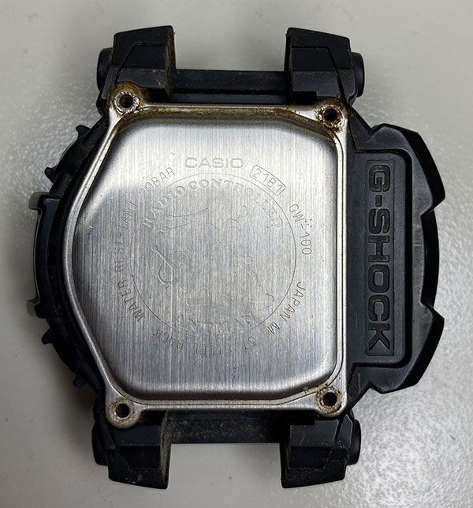
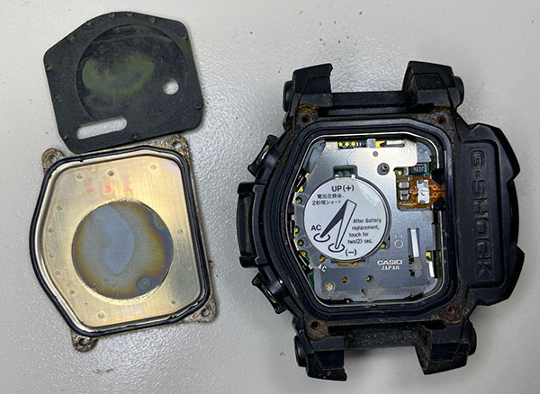
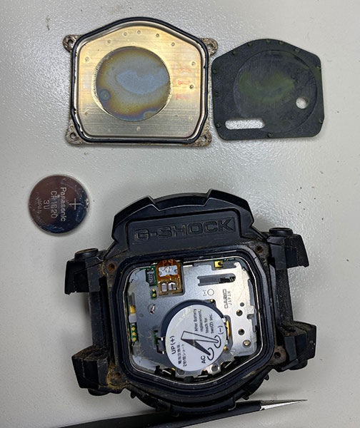
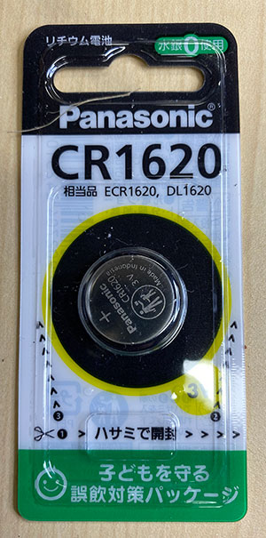
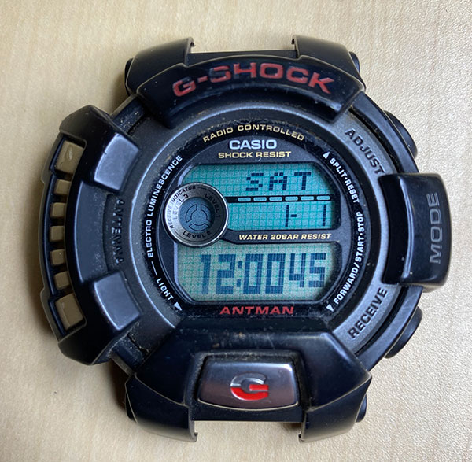
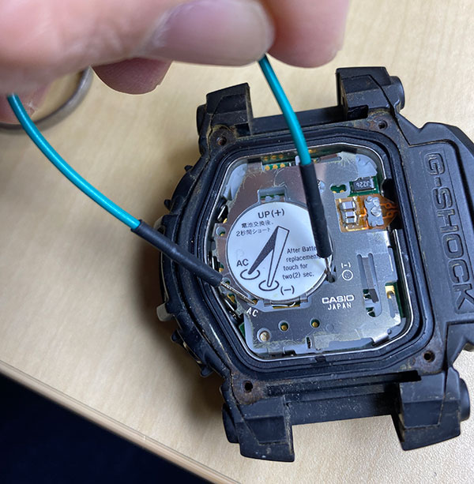
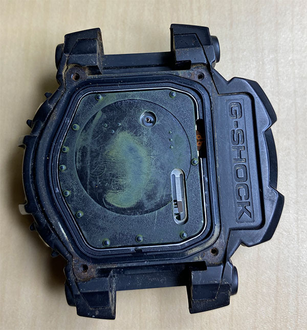
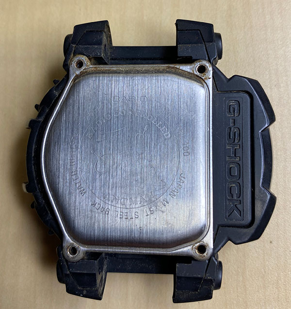
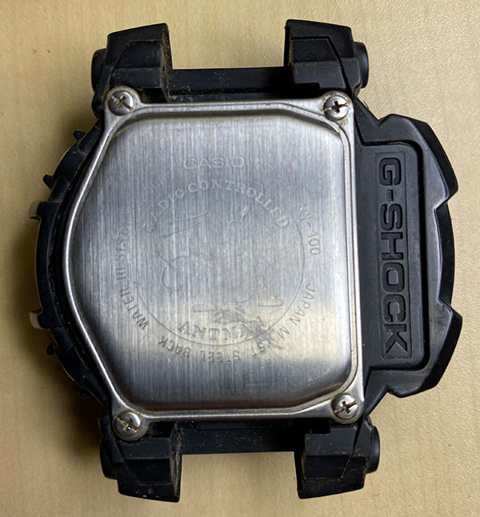
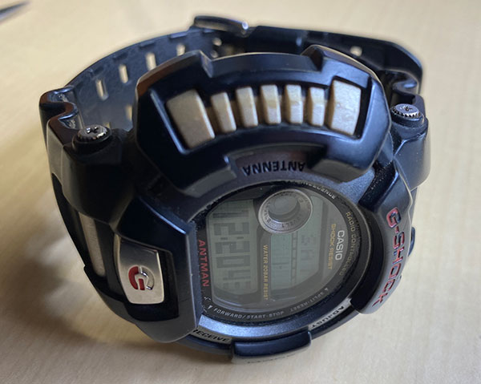

カシオ G-SHOCK電池交換
Apple Watchを使いだしてから，めっきり出番のなくなった腕時計．
しかし，大事なときに変な音がしては困るとき（Siriとか），秒単位での表示が必要なときにはやはり電波時計です．
現在までに，２台購入しました．
2005年発売のもの，20気圧防水，ソーラー機能付きですが最近あまり充電されないようになってきました．
これは，重要な際に使う予定なので，CASIOに送って交換してもらいました．
費用は，
修理料金：\3,000
WEB割引料金：\-150
返却料金：\700
消費税：\355
総額：\3,905
となりました．まあ，これで当分（１５年ぐらい？）は安心して使えそうです．
もう一台は，
2000年発売のもの，もう２０年以上たっています．一応２０気圧防水
だいぶ前に電池切れとなっていましたが，そのまま放置していました．
これを，修理に出すのはもったいないので，自分で交換することにしました．
いままでに，２回ほど家族の腕時計の電池を交換しているので，ある程度は．．．．ノウハウはあります．
・分解

まずは，バンドを外して，裏のネジを４本外します．
だいぶ汚れが目立っています．．．．
裏蓋を外した状態，oリングが７角形をしています．内側にゴムのシートが入っています．

ゴムのシートを外すと，本体が現れました．色々なサイトに載っているリセット方法も記載があります．

電池を外すと，CR-1620，であることがわかります．
思った以上に普通の電池，さらに，防水も単純なoリングだけでした．
・交換

電池は普通に購入できましたが，oリングはネットを探しても見つかりませんでした，カシオにもないかも．
特殊な形状をしているため，汎用性はないし，下手に外すと切れてしまうかもしれません．
ということでグリースだけ塗って置くことにしました，防水性能は落ちているでしょう．．．

電池を交換すると無事動き出しました，さすがカシオ！

リセットですが，これが手こずりました，てっきり"AC"と"-"の部分を短絡させると思ったのに，画面は変化なし．
実はその近くの穴の奥を短絡させるのでしたね．．．画面ではブレッドボードのジャンプケーブルを使いましたがピンセットでも行けました．

シートを被せて

蓋をして

ネジを止めて，

汚れをとって，

無事もとに戻りました．
作業場所はうまく電波が入らないので，リセット状態ですが，そのうち受信してくれるでしょう．
（追伸）
１月２日時点で，きちんと受信していました．
２０年前の製品できちんと現在の電波を受信できるなんて，カシオもすごいが，電波を安定して供給している情報通信研究機構もすごい．